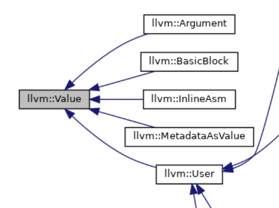
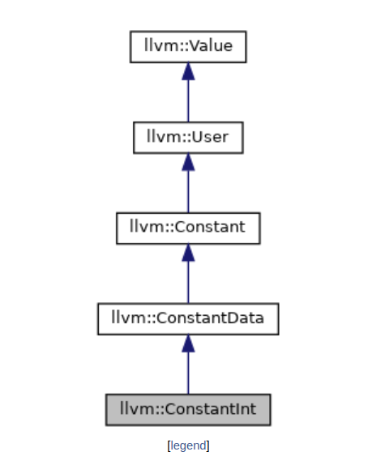
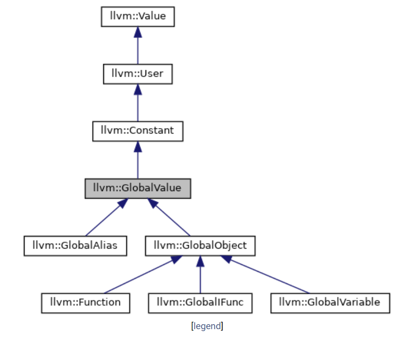
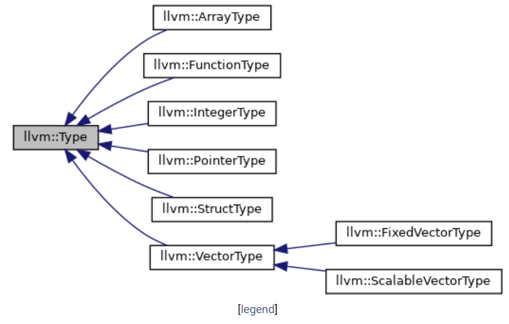

CSCD70 && LLVM
不可视境界线最后变动于：2022年12月9日 中午
docker相关
docker原理待看, 主要是chroot+namespace的使用, 所以只能在linux中运行. Windows必须装上WSL.
- 开启container
1 | |
- 多开container:
1 | |
- 具体创建方法在Assignment0里面, 我还为此换了个阿里源… 下面是dockerfile新加上的部分.
1 | |
LLVM
CLI Guide
- -load: load additional library -{pass_name} ./test/Loop.c: check file(expected) stdin of FileCheck: input file
if correct, nothing will be printed.
需要先在FunctionInfo文件夹执行make.
1 | |
Code Representation: IR
- LLVM is strongly typed with a simple type system. such as
i32type. - the calling convention is abstracted through
callandretinstructions and explicit arguments - it uses an infinite set of temporaries named with a % character instead of specific named registers.
- LLVM IR is actually defined in three isomorphic forms: the textual format above, an in-memory data structure inspected and modified by optimizations themselves, and an efficient and dense on-disk binary “bitcode“ format.
.bcis bitcode,.llis textual format.
Class Architecture
IR所有头文件
Value
就和名字一个意思, It represents a typed value that may be used (among other things) as an operand to an instruction. To keep track of this relationship, the Value class keeps a list of all of the Users that is using it( 就是Use *UseList;)
有一些getType, getValue, use_list_iterator之类的成员函数.
BB
没啥好说的. 查就完事了.
User!!!
It exposes a list of “Operands” that are all of the Values that the User is referring to.
Because LLVM uses Static Single Assignment (SSA) form, there can only be one definition referred to, allowing this direct connection. This connection provides the use-def information in LLVM. 真巧, 因为采用了SSA所以实现了一一对应的指针.
有一些getOperand, getNumOperands之类的函数(显而易见了). 像这种的都会有迭代器.
派生类包括==Constant, Instruction, Operator==之类的(因inst operator有很多种子类所以图片过长).
几个重要的问题: User为什么继承于Value? User和Use有什么关系?
第一个问题, 比如说Instruction class(假设是
%add1 : x = y + z)继承链为Value<-User<-Instruction, 既有value的definition(x), 也有use(y和z).replaceAllUsesWith()是Value的method, 替换掉所有引用x的use, 即def-use chain;replaceUsesOfWith()是User的method, 替换y, z所指向的value, 即use-def chain(由于SSA所以可以实现一一对应).第二个, LLVM的doc和Stack Overflow有相关解释. (Use s will
inlineorhung off)下面这种情况就是hung off,use**数组通过重写operator new的方式附加在User class前面. 而在Value class中则有Use *UseList;, 所以在User中也有uselist.在Use class中, Value和User都作为friend class.
1 | |
Instruction
真的是一堆派生类.
To represent a specific type of instruction, one of many subclasses of Instruction are used. 真的非常多, 比如说二元运算符和UnaryInstruction(又分成UnaryOperator和LoadInstruction之类的).
继承图: Value<(继承自)-User<-Instruction
写个代码又发现之前看文档没看懂的地方(还是得拿源码出来)
llvm/Instruction.def file. This file contains some meta-data about the various different types of instructions in LLVM.
在instruction.h中有下面这个enum, 而Instruction.def中是一大串没有实例化的#define, 在enum中实例化所需的操作后include那个文件就可以实现在enum里面通过预处理后显示ADD = 13(即 OPC = N )了. 不过这种写法doxygen并不能识别出来.
写成 Instruction::ADD 就可以使用这个枚举变量了.
1 | |
Constant
Constant represents a base class for different types of constants.
It is subclassed by ConstantInt, ConstantArray, etc. for representing the various types of Constants.
成员函数有比如getSExtValue这样的, 还有个getSigned静态成员函数等等.
Function
Type
Every Value has a Type. 有一个SubClassData可以在派生类中存储数据, 使用Type class中的set~()即可设置.
有一个我查了挺久的问题: Function和FunctionType有什么区别?
- The
Functionclass keeps track of a list of BasicBlocks, a list of formal Arguments, and a SymbolTable.
有像getArgumentList这样的函数. 基本都是存储一个list的信息. - 而FunctionType的功能就像下面所展示的那样, 存储着编程层面上/一个函数的基本信息.
**FunctionType: **
Subclass of DerivedTypes for function types.
bool isVarArg() const: Returns true if it’s a vararg function.const Type * getReturnType() const: Returns the return type of the function.const Type * getParamType (unsigned i): Returns the type of the ith parameter.const unsigned getNumParams() const: Returns the number of formal parameters.
Optimization
参考博客在此, 即基本概念+LLVM实例.
Assignment1
环境调整:
- 不知道哪个lit是个什么东西, 装在了python模块里面但是又好像是llvm-lit, 明明看到了这个命令但是装上了llvm也没见到. 毁灭吧, 不用这个什么测试了. 好吧
pip install lit就成功了. 和我这两个用户共享同一个home文件夹有关系. - 直接make test检查的是
.ll, 难怪通过不了, 直接使用FileCheck使用的是.c中的CHECK. 但是Function Information任务结果和CHECH中的明显不同, 自然不会成功. - ctest是cmake使用的test suit. lit是llvm的test suit.
- FunctionInfo和LocalOpt要作为两个文件夹打开才会有智能补全.
Assignment:
- (1) Algebraic Identity
- (2) Strength Reduction
- (3) Multi-Instruction Optimization
经过在文档里的一番倒腾终于会了一些基本操作, dyn_cast replaceAllUsesWith getOperand 这些东西等等.
Assignment2
- 到达-定值分析（Reaching-Definition Analysis)
- 活跃变量分析（Live-Variable Analysis)
- 可用表达式分析 (Available-Exprssion Analysis)
- SSA ( static single assignment )